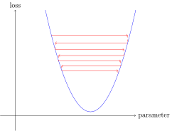

path = untar_data(URLs.MNIST_SAMPLE)4 Under the Hood: Training a Digit Classifier
Having seen what it looks like to actually train a variety of models in Chapter 2, let’s now look under the hood and see exactly what is going on. We’ll start by using computer vision to introduce fundamental tools and concepts for deep learning.
To be exact, we’ll discuss the roles of arrays and tensors and of broadcasting, a powerful technique for using them expressively. We’ll explain stochastic gradient descent (SGD), the mechanism for learning by updating weights automatically. We’ll discuss the choice of a loss function for our basic classification task, and the role of mini-batches. We’ll also describe the math that a basic neural network is actually doing. Finally, we’ll put all these pieces together.
In future chapters we’ll do deep dives into other applications as well, and see how these concepts and tools generalize. But this chapter is about laying foundation stones. To be frank, that also makes this one of the hardest chapters, because of how these concepts all depend on each other. Like an arch, all the stones need to be in place for the structure to stay up. Also like an arch, once that happens, it’s a powerful structure that can support other things. But it requires some patience to assemble.
Let’s begin. The first step is to consider how images are represented in a computer.
4.1 Pixels: The Foundations of Computer Vision
In order to understand what happens in a computer vision model, we first have to understand how computers handle images. We’ll use one of the most famous datasets in computer vision, MNIST, for our experiments. MNIST contains images of handwritten digits, collected by the National Institute of Standards and Technology and collated into a machine learning dataset by Yann Lecun and his colleagues. Lecun used MNIST in 1998 in Lenet-5, the first computer system to demonstrate practically useful recognition of handwritten digit sequences. This was one of the most important breakthroughs in the history of AI.
4.3 End sidebar
For this initial tutorial we are just going to try to create a model that can classify any image as a 3 or a 7. So let’s download a sample of MNIST that contains images of just these digits:
We can see what’s in this directory by using ls, a method added by fastai. This method returns an object of a special fastai class called L, which has all the same functionality of Python’s built-in list, plus a lot more. One of its handy features is that, when printed, it displays the count of items, before listing the items themselves (if there are more than 10 items, it just shows the first few):
path.ls()(#3) [Path('valid'),Path('labels.csv'),Path('train')]The MNIST dataset follows a common layout for machine learning datasets: separate folders for the training set and the validation set (and/or test set). Let’s see what’s inside the training set:
(path/'train').ls()(#2) [Path('train/7'),Path('train/3')]There’s a folder of 3s, and a folder of 7s. In machine learning parlance, we say that “3” and “7” are the labels (or targets) in this dataset. Let’s take a look in one of these folders (using sorted to ensure we all get the same order of files):
threes = (path/'train'/'3').ls().sorted()
sevens = (path/'train'/'7').ls().sorted()
threes(#6131) [Path('train/3/10.png'),Path('train/3/10000.png'),Path('train/3/10011.png'),Path('train/3/10031.png'),Path('train/3/10034.png'),Path('train/3/10042.png'),Path('train/3/10052.png'),Path('train/3/1007.png'),Path('train/3/10074.png'),Path('train/3/10091.png')...]As we might expect, it’s full of image files. Let’s take a look at one now. Here’s an image of a handwritten number 3, taken from the famous MNIST dataset of handwritten numbers:
im3_path = threes[1]
im3 = Image.open(im3_path)
im3
Here we are using the Image class from the Python Imaging Library (PIL), which is the most widely used Python package for opening, manipulating, and viewing images. Jupyter knows about PIL images, so it displays the image for us automatically.
In a computer, everything is represented as a number. To view the numbers that make up this image, we have to convert it to a NumPy array or a PyTorch tensor. For instance, here’s what a section of the image looks like, converted to a NumPy array:
array(im3)[4:10,4:10]array([[ 0, 0, 0, 0, 0, 0],
[ 0, 0, 0, 0, 0, 29],
[ 0, 0, 0, 48, 166, 224],
[ 0, 93, 244, 249, 253, 187],
[ 0, 107, 253, 253, 230, 48],
[ 0, 3, 20, 20, 15, 0]], dtype=uint8)The 4:10 indicates we requested the rows from index 4 (included) to 10 (not included) and the same for the columns. NumPy indexes from top to bottom and left to right, so this section is located in the top-left corner of the image. Here’s the same thing as a PyTorch tensor:
tensor(im3)[4:10,4:10]tensor([[ 0, 0, 0, 0, 0, 0],
[ 0, 0, 0, 0, 0, 29],
[ 0, 0, 0, 48, 166, 224],
[ 0, 93, 244, 249, 253, 187],
[ 0, 107, 253, 253, 230, 48],
[ 0, 3, 20, 20, 15, 0]], dtype=torch.uint8)We can slice the array to pick just the part with the top of the digit in it, and then use a Pandas DataFrame to color-code the values using a gradient, which shows us clearly how the image is created from the pixel values:
im3_t = tensor(im3)
df = pd.DataFrame(im3_t[4:15,4:22])
df.style.set_properties(**{'font-size':'6pt'}).background_gradient('Greys')
You can see that the background white pixels are stored as the number 0, black is the number 255, and shades of gray are between the two. The entire image contains 28 pixels across and 28 pixels down, for a total of 784 pixels. (This is much smaller than an image that you would get from a phone camera, which has millions of pixels, but is a convenient size for our initial learning and experiments. We will build up to bigger, full-color images soon.)
So, now you’ve seen what an image looks like to a computer, let’s recall our goal: create a model that can recognize 3s and 7s. How might you go about getting a computer to do that?
Warning: Stop and Think!: Before you read on, take a moment to think about how a computer might be able to recognize these two different digits. What kinds of features might it be able to look at? How might it be able to identify these features? How could it combine them together? Learning works best when you try to solve problems yourself, rather than just reading somebody else’s answers; so step away from this book for a few minutes, grab a piece of paper and pen, and jot some ideas down…
4.4 First Try: Pixel Similarity
So, here is a first idea: how about we find the average pixel value for every pixel of the 3s, then do the same for the 7s. This will give us two group averages, defining what we might call the “ideal” 3 and 7. Then, to classify an image as one digit or the other, we see which of these two ideal digits the image is most similar to. This certainly seems like it should be better than nothing, so it will make a good baseline.
jargon: Baseline: A simple model which you are confident should perform reasonably well. It should be very simple to implement, and very easy to test, so that you can then test each of your improved ideas, and make sure they are always better than your baseline. Without starting with a sensible baseline, it is very difficult to know whether your super-fancy models are actually any good. One good approach to creating a baseline is doing what we have done here: think of a simple, easy-to-implement model. Another good approach is to search around to find other people that have solved similar problems to yours, and download and run their code on your dataset. Ideally, try both of these!
Step one for our simple model is to get the average of pixel values for each of our two groups. In the process of doing this, we will learn a lot of neat Python numeric programming tricks!
Let’s create a tensor containing all of our 3s stacked together. We already know how to create a tensor containing a single image. To create a tensor containing all the images in a directory, we will first use a Python list comprehension to create a plain list of the single image tensors.
We will use Jupyter to do some little checks of our work along the way—in this case, making sure that the number of returned items seems reasonable:
seven_tensors = [tensor(Image.open(o)) for o in sevens]
three_tensors = [tensor(Image.open(o)) for o in threes]
len(three_tensors),len(seven_tensors)(6131, 6265)note: List Comprehensions: List and dictionary comprehensions are a wonderful feature of Python. Many Python programmers use them every day, including the authors of this book—they are part of “idiomatic Python.” But programmers coming from other languages may have never seen them before. There are a lot of great tutorials just a web search away, so we won’t spend a long time discussing them now. Here is a quick explanation and example to get you started. A list comprehension looks like this:
new_list = [f(o) for o in a_list if o>0]. This will return every element ofa_listthat is greater than 0, after passing it to the functionf. There are three parts here: the collection you are iterating over (a_list), an optional filter (if o>0), and something to do to each element (f(o)). It’s not only shorter to write but way faster than the alternative ways of creating the same list with a loop.
We’ll also check that one of the images looks okay. Since we now have tensors (which Jupyter by default will print as values), rather than PIL images (which Jupyter by default will display as images), we need to use fastai’s show_image function to display it:
show_image(three_tensors[1]);For every pixel position, we want to compute the average over all the images of the intensity of that pixel. To do this we first combine all the images in this list into a single three-dimensional tensor. The most common way to describe such a tensor is to call it a rank-3 tensor. We often need to stack up individual tensors in a collection into a single tensor. Unsurprisingly, PyTorch comes with a function called stack that we can use for this purpose.
Some operations in PyTorch, such as taking a mean, require us to cast our integer types to float types. Since we’ll be needing this later, we’ll also cast our stacked tensor to float now. Casting in PyTorch is as simple as typing the name of the type you wish to cast to, and treating it as a method.
Generally when images are floats, the pixel values are expected to be between 0 and 1, so we will also divide by 255 here:
stacked_sevens = torch.stack(seven_tensors).float()/255
stacked_threes = torch.stack(three_tensors).float()/255
stacked_threes.shapetorch.Size([6131, 28, 28])Perhaps the most important attribute of a tensor is its shape. This tells you the length of each axis. In this case, we can see that we have 6,131 images, each of size 28×28 pixels. There is nothing specifically about this tensor that says that the first axis is the number of images, the second is the height, and the third is the width—the semantics of a tensor are entirely up to us, and how we construct it. As far as PyTorch is concerned, it is just a bunch of numbers in memory.
The length of a tensor’s shape is its rank:
len(stacked_threes.shape)3It is really important for you to commit to memory and practice these bits of tensor jargon: rank is the number of axes or dimensions in a tensor; shape is the size of each axis of a tensor.
A: Watch out because the term “dimension” is sometimes used in two ways. Consider that we live in “three-dimensonal space” where a physical position can be described by a 3-vector
v. But according to PyTorch, the attributev.ndim(which sure looks like the “number of dimensions” ofv) equals one, not three! Why? Becausevis a vector, which is a tensor of rank one, meaning that it has only one axis (even if that axis has a length of three). In other words, sometimes dimension is used for the size of an axis (“space is three-dimensional”); other times, it is used for the rank, or the number of axes (“a matrix has two dimensions”). When confused, I find it helpful to translate all statements into terms of rank, axis, and length, which are unambiguous terms.
We can also get a tensor’s rank directly with ndim:
stacked_threes.ndim3Finally, we can compute what the ideal 3 looks like. We calculate the mean of all the image tensors by taking the mean along dimension 0 of our stacked, rank-3 tensor. This is the dimension that indexes over all the images.
In other words, for every pixel position, this will compute the average of that pixel over all images. The result will be one value for every pixel position, or a single image. Here it is:
mean3 = stacked_threes.mean(0)
show_image(mean3);According to this dataset, this is the ideal number 3! (You may not like it, but this is what peak number 3 performance looks like.) You can see how it’s very dark where all the images agree it should be dark, but it becomes wispy and blurry where the images disagree.
Let’s do the same thing for the 7s, but put all the steps together at once to save some time:
mean7 = stacked_sevens.mean(0)
show_image(mean7);Let’s now pick an arbitrary 3 and measure its distance from our “ideal digits.”
stop: Stop and Think!: How would you calculate how similar a particular image is to each of our ideal digits? Remember to step away from this book and jot down some ideas before you move on! Research shows that recall and understanding improves dramatically when you are engaged with the learning process by solving problems, experimenting, and trying new ideas yourself
Here’s a sample 3:
a_3 = stacked_threes[1]
show_image(a_3);
How can we determine its distance from our ideal 3? We can’t just add up the differences between the pixels of this image and the ideal digit. Some differences will be positive while others will be negative, and these differences will cancel out, resulting in a situation where an image that is too dark in some places and too light in others might be shown as having zero total differences from the ideal. That would be misleading!
To avoid this, there are two main ways data scientists measure distance in this context:
- Take the mean of the absolute value of differences (absolute value is the function that replaces negative values with positive values). This is called the mean absolute difference or L1 norm
- Take the mean of the square of differences (which makes everything positive) and then take the square root (which undoes the squaring). This is called the root mean squared error (RMSE) or L2 norm.
important: It’s Okay to Have Forgotten Your Math: In this book we generally assume that you have completed high school math, and remember at least some of it… But everybody forgets some things! It all depends on what you happen to have had reason to practice in the meantime. Perhaps you have forgotten what a square root is, or exactly how they work. No problem! Any time you come across a maths concept that is not explained fully in this book, don’t just keep moving on; instead, stop and look it up. Make sure you understand the basic idea, how it works, and why we might be using it. One of the best places to refresh your understanding is Khan Academy. For instance, Khan Academy has a great introduction to square roots.
Let’s try both of these now:
dist_3_abs = (a_3 - mean3).abs().mean()
dist_3_sqr = ((a_3 - mean3)**2).mean().sqrt()
dist_3_abs,dist_3_sqr(tensor(0.1114), tensor(0.2021))dist_7_abs = (a_3 - mean7).abs().mean()
dist_7_sqr = ((a_3 - mean7)**2).mean().sqrt()
dist_7_abs,dist_7_sqr(tensor(0.1586), tensor(0.3021))In both cases, the distance between our 3 and the “ideal” 3 is less than the distance to the ideal 7. So our simple model will give the right prediction in this case.
PyTorch already provides both of these as loss functions. You’ll find these inside torch.nn.functional, which the PyTorch team recommends importing as F (and is available by default under that name in fastai):
F.l1_loss(a_3.float(),mean7), F.mse_loss(a_3,mean7).sqrt()(tensor(0.1586), tensor(0.3021))Here mse stands for mean squared error, and l1 refers to the standard mathematical jargon for mean absolute value (in math it’s called the L1 norm).
S: Intuitively, the difference between L1 norm and mean squared error (MSE) is that the latter will penalize bigger mistakes more heavily than the former (and be more lenient with small mistakes).
J: When I first came across this “L1” thingie, I looked it up to see what on earth it meant. I found on Google that it is a vector norm using absolute value, so looked up vector norm and started reading: Given a vector space V over a field F of the real or complex numbers, a norm on V is a nonnegative-valued any function p: V → [0,+∞) with the following properties: For all a ∈ F and all u, v ∈ V, p(u + v) ≤ p(u) + p(v)… Then I stopped reading. “Ugh, I’ll never understand math!” I thought, for the thousandth time. Since then I’ve learned that every time these complex mathy bits of jargon come up in practice, it turns out I can replace them with a tiny bit of code! Like, the L1 loss is just equal to
(a-b).abs().mean(), whereaandbare tensors. I guess mathy folks just think differently than me… I’ll make sure in this book that every time some mathy jargon comes up, I’ll give you the little bit of code it’s equal to as well, and explain in common-sense terms what’s going on.
We just completed various mathematical operations on PyTorch tensors. If you’ve done some numeric programming in NumPy before, you may recognize these as being similar to NumPy arrays. Let’s have a look at those two very important data structures.
NumPy Arrays and PyTorch Tensors
NumPy is the most widely used library for scientific and numeric programming in Python. It provides very similar functionality and a very similar API to that provided by PyTorch; however, it does not support using the GPU or calculating gradients, which are both critical for deep learning. Therefore, in this book we will generally use PyTorch tensors instead of NumPy arrays, where possible.
(Note that fastai adds some features to NumPy and PyTorch to make them a bit more similar to each other. If any code in this book doesn’t work on your computer, it’s possible that you forgot to include a line like this at the start of your notebook: from fastai.vision.all import *.)
But what are arrays and tensors, and why should you care?
Python is slow compared to many languages. Anything fast in Python, NumPy, or PyTorch is likely to be a wrapper for a compiled object written (and optimized) in another language—specifically C. In fact, NumPy arrays and PyTorch tensors can finish computations many thousands of times faster than using pure Python.
A NumPy array is a multidimensional table of data, with all items of the same type. Since that can be any type at all, they can even be arrays of arrays, with the innermost arrays potentially being different sizes—this is called a “jagged array.” By “multidimensional table” we mean, for instance, a list (dimension of one), a table or matrix (dimension of two), a “table of tables” or “cube” (dimension of three), and so forth. If the items are all of some simple type such as integer or float, then NumPy will store them as a compact C data structure in memory. This is where NumPy shines. NumPy has a wide variety of operators and methods that can run computations on these compact structures at the same speed as optimized C, because they are written in optimized C.
A PyTorch tensor is nearly the same thing as a NumPy array, but with an additional restriction that unlocks some additional capabilities. It’s the same in that it, too, is a multidimensional table of data, with all items of the same type. However, the restriction is that a tensor cannot use just any old type—it has to use a single basic numeric type for all components. For example, a PyTorch tensor cannot be jagged. It is always a regularly shaped multidimensional rectangular structure.
The vast majority of methods and operators supported by NumPy on these structures are also supported by PyTorch, but PyTorch tensors have additional capabilities. One major capability is that these structures can live on the GPU, in which case their computation will be optimized for the GPU and can run much faster (given lots of values to work on). In addition, PyTorch can automatically calculate derivatives of these operations, including combinations of operations. As you’ll see, it would be impossible to do deep learning in practice without this capability.
S: If you don’t know what C is, don’t worry as you won’t need it at all. In a nutshell, it’s a low-level (low-level means more similar to the language that computers use internally) language that is very fast compared to Python. To take advantage of its speed while programming in Python, try to avoid as much as possible writing loops, and replace them by commands that work directly on arrays or tensors.
Perhaps the most important new coding skill for a Python programmer to learn is how to effectively use the array/tensor APIs. We will be showing lots more tricks later in this book, but here’s a summary of the key things you need to know for now.
To create an array or tensor, pass a list (or list of lists, or list of lists of lists, etc.) to array() or tensor():
data = [[1,2,3],[4,5,6]]
arr = array (data)
tns = tensor(data)arr # numpyarray([[1, 2, 3],
[4, 5, 6]])tns # pytorchtensor([[1, 2, 3],
[4, 5, 6]])All the operations that follow are shown on tensors, but the syntax and results for NumPy arrays is identical.
You can select a row (note that, like lists in Python, tensors are 0-indexed so 1 refers to the second row/column):
tns[1]tensor([4, 5, 6])or a column, by using : to indicate all of the first axis (we sometimes refer to the dimensions of tensors/arrays as axes):
tns[:,1]tensor([2, 5])You can combine these with Python slice syntax ([start:end] with end being excluded) to select part of a row or column:
tns[1,1:3]tensor([5, 6])And you can use the standard operators such as +, -, *, /:
tns+1tensor([[2, 3, 4],
[5, 6, 7]])Tensors have a type:
tns.type()'torch.LongTensor'And will automatically change type as needed, for example from int to float:
tns*1.5tensor([[1.5000, 3.0000, 4.5000],
[6.0000, 7.5000, 9.0000]])So, is our baseline model any good? To quantify this, we must define a metric.
4.5 Computing Metrics Using Broadcasting
Recall that a metric is a number that is calculated based on the predictions of our model, and the correct labels in our dataset, in order to tell us how good our model is. For instance, we could use either of the functions we saw in the previous section, mean squared error, or mean absolute error, and take the average of them over the whole dataset. However, neither of these are numbers that are very understandable to most people; in practice, we normally use accuracy as the metric for classification models.
As we’ve discussed, we want to calculate our metric over a validation set. This is so that we don’t inadvertently overfit—that is, train a model to work well only on our training data. This is not really a risk with the pixel similarity model we’re using here as a first try, since it has no trained components, but we’ll use a validation set anyway to follow normal practices and to be ready for our second try later.
To get a validation set we need to remove some of the data from training entirely, so it is not seen by the model at all. As it turns out, the creators of the MNIST dataset have already done this for us. Do you remember how there was a whole separate directory called valid? That’s what this directory is for!
So to start with, let’s create tensors for our 3s and 7s from that directory. These are the tensors we will use to calculate a metric measuring the quality of our first-try model, which measures distance from an ideal image:
valid_3_tens = torch.stack([tensor(Image.open(o))
for o in (path/'valid'/'3').ls()])
valid_3_tens = valid_3_tens.float()/255
valid_7_tens = torch.stack([tensor(Image.open(o))
for o in (path/'valid'/'7').ls()])
valid_7_tens = valid_7_tens.float()/255
valid_3_tens.shape,valid_7_tens.shape(torch.Size([1010, 28, 28]), torch.Size([1028, 28, 28]))It’s good to get in the habit of checking shapes as you go. Here we see two tensors, one representing the 3s validation set of 1,010 images of size 28×28, and one representing the 7s validation set of 1,028 images of size 28×28.
We ultimately want to write a function, is_3, that will decide if an arbitrary image is a 3 or a 7. It will do this by deciding which of our two “ideal digits” this arbitrary image is closer to. For that we need to define a notion of distance—that is, a function that calculates the distance between two images.
We can write a simple function that calculates the mean absolute error using an expression very similar to the one we wrote in the last section:
def mnist_distance(a,b): return (a-b).abs().mean((-1,-2))
mnist_distance(a_3, mean3)tensor(0.1114)This is the same value we previously calculated for the distance between these two images, the ideal 3 mean3 and the arbitrary sample 3 a_3, which are both single-image tensors with a shape of [28,28].
But in order to calculate a metric for overall accuracy, we will need to calculate the distance to the ideal 3 for every image in the validation set. How do we do that calculation? We could write a loop over all of the single-image tensors that are stacked within our validation set tensor, valid_3_tens, which has a shape of [1010,28,28] representing 1,010 images. But there is a better way.
Something very interesting happens when we take this exact same distance function, designed for comparing two single images, but pass in as an argument valid_3_tens, the tensor that represents the 3s validation set:
valid_3_dist = mnist_distance(valid_3_tens, mean3)
valid_3_dist, valid_3_dist.shape(tensor([0.1634, 0.1145, 0.1363, ..., 0.1105, 0.1111, 0.1640]),
torch.Size([1010]))Instead of complaining about shapes not matching, it returned the distance for every single image as a vector (i.e., a rank-1 tensor) of length 1,010 (the number of 3s in our validation set). How did that happen?
Take another look at our function mnist_distance, and you’ll see we have there the subtraction (a-b). The magic trick is that PyTorch, when it tries to perform a simple subtraction operation between two tensors of different ranks, will use broadcasting. That is, it will automatically expand the tensor with the smaller rank to have the same size as the one with the larger rank. Broadcasting is an important capability that makes tensor code much easier to write.
After broadcasting so the two argument tensors have the same rank, PyTorch applies its usual logic for two tensors of the same rank: it performs the operation on each corresponding element of the two tensors, and returns the tensor result. For instance:
tensor([1,2,3]) + tensor(1)tensor([2, 3, 4])So in this case, PyTorch treats mean3, a rank-2 tensor representing a single image, as if it were 1,010 copies of the same image, and then subtracts each of those copies from each 3 in our validation set. What shape would you expect this tensor to have? Try to figure it out yourself before you look at the answer below:
(valid_3_tens-mean3).shapetorch.Size([1010, 28, 28])We are calculating the difference between our “ideal 3” and each of the 1,010 3s in the validation set, for each of 28×28 images, resulting in the shape [1010,28,28].
There are a couple of important points about how broadcasting is implemented, which make it valuable not just for expressivity but also for performance:
- PyTorch doesn’t actually copy
mean31,010 times. It pretends it were a tensor of that shape, but doesn’t actually allocate any additional memory - It does the whole calculation in C (or, if you’re using a GPU, in CUDA, the equivalent of C on the GPU), tens of thousands of times faster than pure Python (up to millions of times faster on a GPU!).
This is true of all broadcasting and elementwise operations and functions done in PyTorch. It’s the most important technique for you to know to create efficient PyTorch code.
Next in mnist_distance we see abs. You might be able to guess now what this does when applied to a tensor. It applies the method to each individual element in the tensor, and returns a tensor of the results (that is, it applies the method “elementwise”). So in this case, we’ll get back 1,010 matrices of absolute values.
Finally, our function calls mean((-1,-2)). The tuple (-1,-2) represents a range of axes. In Python, -1 refers to the last element, and -2 refers to the second-to-last. So in this case, this tells PyTorch that we want to take the mean ranging over the values indexed by the last two axes of the tensor. The last two axes are the horizontal and vertical dimensions of an image. After taking the mean over the last two axes, we are left with just the first tensor axis, which indexes over our images, which is why our final size was (1010). In other words, for every image, we averaged the intensity of all the pixels in that image.
We’ll be learning lots more about broadcasting throughout this book, especially in Chapter 17, and will be practicing it regularly too.
We can use mnist_distance to figure out whether an image is a 3 or not by using the following logic: if the distance between the digit in question and the ideal 3 is less than the distance to the ideal 7, then it’s a 3. This function will automatically do broadcasting and be applied elementwise, just like all PyTorch functions and operators:
def is_3(x): return mnist_distance(x,mean3) < mnist_distance(x,mean7)Let’s test it on our example case:
is_3(a_3), is_3(a_3).float()(tensor(True), tensor(1.))Note that when we convert the Boolean response to a float, we get 1.0 for True and 0.0 for False. Thanks to broadcasting, we can also test it on the full validation set of 3s:
is_3(valid_3_tens)tensor([True, True, True, ..., True, True, True])Now we can calculate the accuracy for each of the 3s and 7s by taking the average of that function for all 3s and its inverse for all 7s:
accuracy_3s = is_3(valid_3_tens).float() .mean()
accuracy_7s = (1 - is_3(valid_7_tens).float()).mean()
accuracy_3s,accuracy_7s,(accuracy_3s+accuracy_7s)/2(tensor(0.9168), tensor(0.9854), tensor(0.9511))This looks like a pretty good start! We’re getting over 90% accuracy on both 3s and 7s, and we’ve seen how to define a metric conveniently using broadcasting.
But let’s be honest: 3s and 7s are very different-looking digits. And we’re only classifying 2 out of the 10 possible digits so far. So we’re going to need to do better!
To do better, perhaps it is time to try a system that does some real learning—that is, that can automatically modify itself to improve its performance. In other words, it’s time to talk about the training process, and SGD.
4.6 Stochastic Gradient Descent (SGD)
Do you remember the way that Arthur Samuel described machine learning, which we quoted in Chapter 1?
Suppose we arrange for some automatic means of testing the effectiveness of any current weight assignment in terms of actual performance and provide a mechanism for altering the weight assignment so as to maximize the performance. We need not go into the details of such a procedure to see that it could be made entirely automatic and to see that a machine so programmed would “learn” from its experience.
As we discussed, this is the key to allowing us to have a model that can get better and better—that can learn. But our pixel similarity approach does not really do this. We do not have any kind of weight assignment, or any way of improving based on testing the effectiveness of a weight assignment. In other words, we can’t really improve our pixel similarity approach by modifying a set of parameters. In order to take advantage of the power of deep learning, we will first have to represent our task in the way that Arthur Samuel described it.
Instead of trying to find the similarity between an image and an “ideal image,” we could instead look at each individual pixel and come up with a set of weights for each one, such that the highest weights are associated with those pixels most likely to be black for a particular category. For instance, pixels toward the bottom right are not very likely to be activated for a 7, so they should have a low weight for a 7, but they are likely to be activated for an 8, so they should have a high weight for an 8. This can be represented as a function and set of weight values for each possible category—for instance the probability of being the number 8:
def pr_eight(x,w): return (x*w).sum()Here we are assuming that x is the image, represented as a vector—in other words, with all of the rows stacked up end to end into a single long line. And we are assuming that the weights are a vector w. If we have this function, then we just need some way to update the weights to make them a little bit better. With such an approach, we can repeat that step a number of times, making the weights better and better, until they are as good as we can make them.
We want to find the specific values for the vector w that causes the result of our function to be high for those images that are actually 8s, and low for those images that are not. Searching for the best vector w is a way to search for the best function for recognising 8s. (Because we are not yet using a deep neural network, we are limited by what our function can actually do—we are going to fix that constraint later in this chapter.)
To be more specific, here are the steps that we are going to require, to turn this function into a machine learning classifier:
- Initialize the weights.
- For each image, use these weights to predict whether it appears to be a 3 or a 7.
- Based on these predictions, calculate how good the model is (its loss).
- Calculate the gradient, which measures for each weight, how changing that weight would change the loss
- Step (that is, change) all the weights based on that calculation.
- Go back to the step 2, and repeat the process.
- Iterate until you decide to stop the training process (for instance, because the model is good enough or you don’t want to wait any longer).
These seven steps, illustrated in Figure 4.2, are the key to the training of all deep learning models. That deep learning turns out to rely entirely on these steps is extremely surprising and counterintuitive. It’s amazing that this process can solve such complex problems. But, as you’ll see, it really does!

There are many different ways to do each of these seven steps, and we will be learning about them throughout the rest of this book. These are the details that make a big difference for deep learning practitioners, but it turns out that the general approach to each one generally follows some basic principles. Here are a few guidelines:
- Initialize:: We initialize the parameters to random values. This may sound surprising. There are certainly other choices we could make, such as initializing them to the percentage of times that pixel is activated for that category—but since we already know that we have a routine to improve these weights, it turns out that just starting with random weights works perfectly well.
- Loss:: This is what Samuel referred to when he spoke of testing the effectiveness of any current weight assignment in terms of actual performance. We need some function that will return a number that is small if the performance of the model is good (the standard approach is to treat a small loss as good, and a large loss as bad, although this is just a convention).
- Step:: A simple way to figure out whether a weight should be increased a bit, or decreased a bit, would be just to try it: increase the weight by a small amount, and see if the loss goes up or down. Once you find the correct direction, you could then change that amount by a bit more, and a bit less, until you find an amount that works well. However, this is slow! As we will see, the magic of calculus allows us to directly figure out in which direction, and by roughly how much, to change each weight, without having to try all these small changes. The way to do this is by calculating gradients. This is just a performance optimization, we would get exactly the same results by using the slower manual process as well.
- Stop:: Once we’ve decided how many epochs to train the model for (a few suggestions for this were given in the earlier list), we apply that decision. This is where that decision is applied. For our digit classifier, we would keep training until the accuracy of the model started getting worse, or we ran out of time.
Before applying these steps to our image classification problem, let’s illustrate what they look like in a simpler case. First we will define a very simple function, the quadratic—let’s pretend that this is our loss function, and x is a weight parameter of the function:
def f(x): return x**2Here is a graph of that function:
plot_function(f, 'x', 'x**2')The sequence of steps we described earlier starts by picking some random value for a parameter, and calculating the value of the loss:
plot_function(f, 'x', 'x**2')
plt.scatter(-1.5, f(-1.5), color='red');Now we look to see what would happen if we increased or decreased our parameter by a little bit—the adjustment. This is simply the slope at a particular point:
We can change our weight by a little in the direction of the slope, calculate our loss and adjustment again, and repeat this a few times. Eventually, we will get to the lowest point on our curve:
This basic idea goes all the way back to Isaac Newton, who pointed out that we can optimize arbitrary functions in this way. Regardless of how complicated our functions become, this basic approach of gradient descent will not significantly change. The only minor changes we will see later in this book are some handy ways we can make it faster, by finding better steps.
Calculating Gradients
The one magic step is the bit where we calculate the gradients. As we mentioned, we use calculus as a performance optimization; it allows us to more quickly calculate whether our loss will go up or down when we adjust our parameters up or down. In other words, the gradients will tell us how much we have to change each weight to make our model better.
You may remember from your high school calculus class that the derivative of a function tells you how much a change in its parameters will change its result. If not, don’t worry, lots of us forget calculus once high school is behind us! But you will have to have some intuitive understanding of what a derivative is before you continue, so if this is all very fuzzy in your head, head over to Khan Academy and complete the lessons on basic derivatives. You won’t have to know how to calculate them yourselves, you just have to know what a derivative is.
The key point about a derivative is this: for any function, such as the quadratic function we saw in the previous section, we can calculate its derivative. The derivative is another function. It calculates the change, rather than the value. For instance, the derivative of the quadratic function at the value 3 tells us how rapidly the function changes at the value 3. More specifically, you may recall that gradient is defined as rise/run, that is, the change in the value of the function, divided by the change in the value of the parameter. When we know how our function will change, then we know what we need to do to make it smaller. This is the key to machine learning: having a way to change the parameters of a function to make it smaller. Calculus provides us with a computational shortcut, the derivative, which lets us directly calculate the gradients of our functions.
One important thing to be aware of is that our function has lots of weights that we need to adjust, so when we calculate the derivative we won’t get back one number, but lots of them—a gradient for every weight. But there is nothing mathematically tricky here; you can calculate the derivative with respect to one weight, and treat all the other ones as constant, then repeat that for each other weight. This is how all of the gradients are calculated, for every weight.
We mentioned just now that you won’t have to calculate any gradients yourself. How can that be? Amazingly enough, PyTorch is able to automatically compute the derivative of nearly any function! What’s more, it does it very fast. Most of the time, it will be at least as fast as any derivative function that you can create by hand. Let’s see an example.
First, let’s pick a tensor value which we want gradients at:
xt = tensor(3.).requires_grad_()Notice the special method requires_grad_? That’s the magical incantation we use to tell PyTorch that we want to calculate gradients with respect to that variable at that value. It is essentially tagging the variable, so PyTorch will remember to keep track of how to compute gradients of the other, direct calculations on it that you will ask for.
a: This API might throw you off if you’re coming from math or physics. In those contexts the “gradient” of a function is just another function (i.e., its derivative), so you might expect gradient-related APIs to give you a new function. But in deep learning, “gradients” usually means the value of a function’s derivative at a particular argument value. The PyTorch API also puts the focus on the argument, not the function you’re actually computing the gradients of. It may feel backwards at first, but it’s just a different perspective.
Now we calculate our function with that value. Notice how PyTorch prints not just the value calculated, but also a note that it has a gradient function it’ll be using to calculate our gradients when needed:
yt = f(xt)
yttensor(9., grad_fn=<PowBackward0>)Finally, we tell PyTorch to calculate the gradients for us:
yt.backward()The “backward” here refers to backpropagation, which is the name given to the process of calculating the derivative of each layer. We’ll see how this is done exactly in chapter Chapter 17, when we calculate the gradients of a deep neural net from scratch. This is called the “backward pass” of the network, as opposed to the “forward pass,” which is where the activations are calculated. Life would probably be easier if backward was just called calculate_grad, but deep learning folks really do like to add jargon everywhere they can!
We can now view the gradients by checking the grad attribute of our tensor:
xt.gradtensor(6.)If you remember your high school calculus rules, the derivative of x**2 is 2*x, and we have x=3, so the gradients should be 2*3=6, which is what PyTorch calculated for us!
Now we’ll repeat the preceding steps, but with a vector argument for our function:
xt = tensor([3.,4.,10.]).requires_grad_()
xttensor([ 3., 4., 10.], requires_grad=True)And we’ll add sum to our function so it can take a vector (i.e., a rank-1 tensor), and return a scalar (i.e., a rank-0 tensor):
def f(x): return (x**2).sum()
yt = f(xt)
yttensor(125., grad_fn=<SumBackward0>)Our gradients are 2*xt, as we’d expect!
yt.backward()
xt.gradtensor([ 6., 8., 20.])The gradients only tell us the slope of our function, they don’t actually tell us exactly how far to adjust the parameters. But it gives us some idea of how far; if the slope is very large, then that may suggest that we have more adjustments to do, whereas if the slope is very small, that may suggest that we are close to the optimal value.
Stepping With a Learning Rate
Deciding how to change our parameters based on the values of the gradients is an important part of the deep learning process. Nearly all approaches start with the basic idea of multiplying the gradient by some small number, called the learning rate (LR). The learning rate is often a number between 0.001 and 0.1, although it could be anything. Often, people select a learning rate just by trying a few, and finding which results in the best model after training (we’ll show you a better approach later in this book, called the learning rate finder). Once you’ve picked a learning rate, you can adjust your parameters using this simple function:
w -= gradient(w) * lrThis is known as stepping your parameters, using an optimizer step. Notice how we subtract the gradient * lr from the parameter to update it. This allows us to adjust the parameter in the direction of the slope by increasing the parameter when the slope is negative and decreasing the parameter when the slope is positive. We want to adjust our parameters in the direction of the slope because our goal in deep learning is to minimize the loss.
If you pick a learning rate that’s too low, it can mean having to do a lot of steps. Figure 4.3 illustrates that.

But picking a learning rate that’s too high is even worse—it can actually result in the loss getting worse, as we see in Figure 4.4!

If the learning rate is too high, it may also “bounce” around, rather than actually diverging; Figure 4.5 shows how this has the result of taking many steps to train successfully.

Now let’s apply all of this in an end-to-end example.
An End-to-End SGD Example
We’ve seen how to use gradients to find a minimum. Now it’s time to look at an SGD example and see how finding a minimum can be used to train a model to fit data better.
Let’s start with a simple, synthetic, example model. Imagine you were measuring the speed of a roller coaster as it went over the top of a hump. It would start fast, and then get slower as it went up the hill; it would be slowest at the top, and it would then speed up again as it went downhill. You want to build a model of how the speed changes over time. If you were measuring the speed manually every second for 20 seconds, it might look something like this:
time = torch.arange(0,20).float(); timetensor([ 0., 1., 2., 3., 4., 5., 6., 7., 8., 9., 10., 11., 12., 13., 14., 15., 16., 17., 18., 19.])speed = torch.randn(20)*3 + 0.75*(time-9.5)**2 + 1
plt.scatter(time,speed);We’ve added a bit of random noise, since measuring things manually isn’t precise. This means it’s not that easy to answer the question: what was the roller coaster’s speed? Using SGD we can try to find a function that matches our observations. We can’t consider every possible function, so let’s use a guess that it will be quadratic; i.e., a function of the form a*(time**2)+(b*time)+c.
We want to distinguish clearly between the function’s input (the time when we are measuring the coaster’s speed) and its parameters (the values that define which quadratic we’re trying). So, let’s collect the parameters in one argument and thus separate the input, t, and the parameters, params, in the function’s signature:
def f(t, params):
a,b,c = params
return a*(t**2) + (b*t) + cIn other words, we’ve restricted the problem of finding the best imaginable function that fits the data, to finding the best quadratic function. This greatly simplifies the problem, since every quadratic function is fully defined by the three parameters a, b, and c. Thus, to find the best quadratic function, we only need to find the best values for a, b, and c.
If we can solve this problem for the three parameters of a quadratic function, we’ll be able to apply the same approach for other, more complex functions with more parameters—such as a neural net. Let’s find the parameters for f first, and then we’ll come back and do the same thing for the MNIST dataset with a neural net.
We need to define first what we mean by “best.” We define this precisely by choosing a loss function, which will return a value based on a prediction and a target, where lower values of the function correspond to “better” predictions. It is important for loss functions to return lower values when predictions are more accurate, as the SGD procedure we defined earlier will try to minimize this loss. For continuous data, it’s common to use mean squared error:
def mse(preds, targets): return ((preds-targets)**2).mean()Now, let’s work through our 7 step process.
Step 1: Initialize the parameters
First, we initialize the parameters to random values, and tell PyTorch that we want to track their gradients, using requires_grad_:
params = torch.randn(3).requires_grad_()Step 2: Calculate the predictions
Next, we calculate the predictions:
preds = f(time, params)Let’s create a little function to see how close our predictions are to our targets, and take a look:
def show_preds(preds, ax=None):
if ax is None: ax=plt.subplots()[1]
ax.scatter(time, speed)
ax.scatter(time, to_np(preds), color='red')
ax.set_ylim(-300,100)show_preds(preds)This doesn’t look very close—our random parameters suggest that the roller coaster will end up going backwards, since we have negative speeds!
Step 3: Calculate the loss
We calculate the loss as follows:
loss = mse(preds, speed)
losstensor(25823.8086, grad_fn=<MeanBackward0>)Our goal is now to improve this. To do that, we’ll need to know the gradients.
Step 4: Calculate the gradients
The next step is to calculate the gradients. In other words, calculate an approximation of how the parameters need to change:
loss.backward()
params.gradtensor([-53195.8633, -3419.7148, -253.8908])params.grad * 1e-5tensor([-0.5320, -0.0342, -0.0025])We can use these gradients to improve our parameters. We’ll need to pick a learning rate (we’ll discuss how to do that in practice in the next chapter; for now we’ll just use 1e-5, or 0.00001):
paramstensor([-0.7658, -0.7506, 1.3525], requires_grad=True)Step 5: Step the weights.
Now we need to update the parameters based on the gradients we just calculated:
lr = 1e-5
params.data -= lr * params.grad.data
params.grad = Nonea: Understanding this bit depends on remembering recent history. To calculate the gradients we call
backwardon theloss. But thislosswas itself calculated bymse, which in turn tookpredsas an input, which was calculated usingftaking as an inputparams, which was the object on which we originally calledrequires_grad_—which is the original call that now allows us to callbackwardonloss. This chain of function calls represents the mathematical composition of functions, which enables PyTorch to use calculus’s chain rule under the hood to calculate these gradients.
Let’s see if the loss has improved:
preds = f(time,params)
mse(preds, speed)tensor(5435.5356, grad_fn=<MeanBackward0>)And take a look at the plot:
show_preds(preds)We need to repeat this a few times, so we’ll create a function to apply one step:
def apply_step(params, prn=True):
preds = f(time, params)
loss = mse(preds, speed)
loss.backward()
params.data -= lr * params.grad.data
params.grad = None
if prn: print(loss.item())
return predsStep 6: Repeat the process
Now we iterate. By looping and performing many improvements, we hope to reach a good result:
for i in range(10): apply_step(params)5435.53564453125
1577.44921875
847.3778076171875
709.2225341796875
683.0758056640625
678.1243896484375
677.1838989257812
677.0023193359375
676.9645385742188
676.9537353515625The loss is going down, just as we hoped! But looking only at these loss numbers disguises the fact that each iteration represents an entirely different quadratic function being tried, on the way to finding the best possible quadratic function. We can see this process visually if, instead of printing out the loss function, we plot the function at every step. Then we can see how the shape is approaching the best possible quadratic function for our data:
_,axs = plt.subplots(1,4,figsize=(12,3))
for ax in axs: show_preds(apply_step(params, False), ax)
plt.tight_layout()Step 7: stop
We just decided to stop after 10 epochs arbitrarily. In practice, we would watch the training and validation losses and our metrics to decide when to stop, as we’ve discussed.
Summarizing Gradient Descent
To summarize, at the beginning, the weights of our model can be random (training from scratch) or come from a pretrained model (transfer learning). In the first case, the output we will get from our inputs won’t have anything to do with what we want, and even in the second case, it’s very likely the pretrained model won’t be very good at the specific task we are targeting. So the model will need to learn better weights.
We begin by comparing the outputs the model gives us with our targets (we have labeled data, so we know what result the model should give) using a loss function, which returns a number that we want to make as low as possible by improving our weights. To do this, we take a few data items (such as images) from the training set and feed them to our model. We compare the corresponding targets using our loss function, and the score we get tells us how wrong our predictions were. We then change the weights a little bit to make it slightly better.
To find how to change the weights to make the loss a bit better, we use calculus to calculate the gradients. (Actually, we let PyTorch do it for us!) Let’s consider an analogy. Imagine you are lost in the mountains with your car parked at the lowest point. To find your way back to it, you might wander in a random direction, but that probably wouldn’t help much. Since you know your vehicle is at the lowest point, you would be better off going downhill. By always taking a step in the direction of the steepest downward slope, you should eventually arrive at your destination. We use the magnitude of the gradient (i.e., the steepness of the slope) to tell us how big a step to take; specifically, we multiply the gradient by a number we choose called the learning rate to decide on the step size. We then iterate until we have reached the lowest point, which will be our parking lot, then we can stop.
All of that we just saw can be transposed directly to the MNIST dataset, except for the loss function. Let’s now see how we can define a good training objective.
4.7 The MNIST Loss Function
We already have our independent variables x—these are the images themselves. We’ll concatenate them all into a single tensor, and also change them from a list of matrices (a rank-3 tensor) to a list of vectors (a rank-2 tensor). We can do this using view, which is a PyTorch method that changes the shape of a tensor without changing its contents. -1 is a special parameter to view that means “make this axis as big as necessary to fit all the data”:
train_x = torch.cat([stacked_threes, stacked_sevens]).view(-1, 28*28)We need a label for each image. We’ll use 1 for 3s and 0 for 7s:
train_y = tensor([1]*len(threes) + [0]*len(sevens)).unsqueeze(1)
train_x.shape,train_y.shape(torch.Size([12396, 784]), torch.Size([12396, 1]))A Dataset in PyTorch is required to return a tuple of (x,y) when indexed. Python provides a zip function which, when combined with list, provides a simple way to get this functionality:
dset = list(zip(train_x,train_y))
x,y = dset[0]
x.shape,y(torch.Size([784]), tensor([1]))valid_x = torch.cat([valid_3_tens, valid_7_tens]).view(-1, 28*28)
valid_y = tensor([1]*len(valid_3_tens) + [0]*len(valid_7_tens)).unsqueeze(1)
valid_dset = list(zip(valid_x,valid_y))Now we need an (initially random) weight for every pixel (this is the initialize step in our seven-step process):
def init_params(size, std=1.0): return (torch.randn(size)*std).requires_grad_()weights = init_params((28*28,1))The function weights*pixels won’t be flexible enough—it is always equal to 0 when the pixels are equal to 0 (i.e., its intercept is 0). You might remember from high school math that the formula for a line is y=w*x+b; we still need the b. We’ll initialize it to a random number too:
bias = init_params(1)In neural networks, the w in the equation y=w*x+b is called the weights, and the b is called the bias. Together, the weights and bias make up the parameters.
jargon: Parameters: The weights and biases of a model. The weights are the
win the equationw*x+b, and the biases are thebin that equation.
We can now calculate a prediction for one image:
(train_x[0]*weights.T).sum() + biastensor([20.2336], grad_fn=<AddBackward0>)While we could use a Python for loop to calculate the prediction for each image, that would be very slow. Because Python loops don’t run on the GPU, and because Python is a slow language for loops in general, we need to represent as much of the computation in a model as possible using higher-level functions.
In this case, there’s an extremely convenient mathematical operation that calculates w*x for every row of a matrix—it’s called matrix multiplication. Figure 4.7 shows what matrix multiplication looks like.

This image shows two matrices, A and B, being multiplied together. Each item of the result, which we’ll call AB, contains each item of its corresponding row of A multiplied by each item of its corresponding column of B, added together. For instance, row 1, column 2 (the yellow dot with a red border) is calculated as \(a_{1,1} * b_{1,2} + a_{1,2} * b_{2,2}\). If you need a refresher on matrix multiplication, we suggest you take a look at the Intro to Matrix Multiplication on Khan Academy, since this is the most important mathematical operation in deep learning.
In Python, matrix multiplication is represented with the @ operator. Let’s try it:
def linear1(xb): return xb@weights + bias
preds = linear1(train_x)
predstensor([[20.2336],
[17.0644],
[15.2384],
...,
[18.3804],
[23.8567],
[28.6816]], grad_fn=<AddBackward0>)The first element is the same as we calculated before, as we’d expect. This equation, batch@weights + bias, is one of the two fundamental equations of any neural network (the other one is the activation function, which we’ll see in a moment).
Let’s check our accuracy. To decide if an output represents a 3 or a 7, we can just check whether it’s greater than 0.0, so our accuracy for each item can be calculated (using broadcasting, so no loops!) with:
corrects = (preds>0.0).float() == train_y
correctstensor([[ True],
[ True],
[ True],
...,
[False],
[False],
[False]])corrects.float().mean().item()0.4912068545818329Now let’s see what the change in accuracy is for a small change in one of the weights (note that we have to ask PyTorch not to calculate gradients as we do this, which is what with torch.no_grad() is doing here):
with torch.no_grad(): weights[0] *= 1.0001preds = linear1(train_x)
((preds>0.0).float() == train_y).float().mean().item()0.4912068545818329As we’ve seen, we need gradients in order to improve our model using SGD, and in order to calculate gradients we need some loss function that represents how good our model is. That is because the gradients are a measure of how that loss function changes with small tweaks to the weights.
So, we need to choose a loss function. The obvious approach would be to use accuracy, which is our metric, as our loss function as well. In this case, we would calculate our prediction for each image, collect these values to calculate an overall accuracy, and then calculate the gradients of each weight with respect to that overall accuracy.
Unfortunately, we have a significant technical problem here. The gradient of a function is its slope, or its steepness, which can be defined as rise over run—that is, how much the value of the function goes up or down, divided by how much we changed the input. We can write this in mathematically as: (y_new - y_old) / (x_new - x_old). This gives us a good approximation of the gradient when x_new is very similar to x_old, meaning that their difference is very small. But accuracy only changes at all when a prediction changes from a 3 to a 7, or vice versa. The problem is that a small change in weights from x_old to x_new isn’t likely to cause any prediction to change, so (y_new - y_old) will almost always be 0. In other words, the gradient is 0 almost everywhere.
A very small change in the value of a weight will often not actually change the accuracy at all. This means it is not useful to use accuracy as a loss function—if we do, most of the time our gradients will actually be 0, and the model will not be able to learn from that number.
S: In mathematical terms, accuracy is a function that is constant almost everywhere (except at the threshold, 0.5), so its derivative is nil almost everywhere (and infinity at the threshold). This then gives gradients that are 0 or infinite, which are useless for updating the model.
Instead, we need a loss function which, when our weights result in slightly better predictions, gives us a slightly better loss. So what does a “slightly better prediction” look like, exactly? Well, in this case, it means that if the correct answer is a 3 the score is a little higher, or if the correct answer is a 7 the score is a little lower.
Let’s write such a function now. What form does it take?
The loss function receives not the images themselves, but the predictions from the model. Let’s make one argument, prds, of values between 0 and 1, where each value is the prediction that an image is a 3. It is a vector (i.e., a rank-1 tensor), indexed over the images.
The purpose of the loss function is to measure the difference between predicted values and the true values — that is, the targets (aka labels). Let’s make another argument, trgts, with values of 0 or 1 which tells whether an image actually is a 3 or not. It is also a vector (i.e., another rank-1 tensor), indexed over the images.
So, for instance, suppose we had three images which we knew were a 3, a 7, and a 3. And suppose our model predicted with high confidence (0.9) that the first was a 3, with slight confidence (0.4) that the second was a 7, and with fair confidence (0.2), but incorrectly, that the last was a 7. This would mean our loss function would receive these values as its inputs:
trgts = tensor([1,0,1])
prds = tensor([0.9, 0.4, 0.2])Here’s a first try at a loss function that measures the distance between predictions and targets:
def mnist_loss(predictions, targets):
return torch.where(targets==1, 1-predictions, predictions).mean()We’re using a new function, torch.where(a,b,c). This is the same as running the list comprehension [b[i] if a[i] else c[i] for i in range(len(a))], except it works on tensors, at C/CUDA speed. In plain English, this function will measure how distant each prediction is from 1 if it should be 1, and how distant it is from 0 if it should be 0, and then it will take the mean of all those distances.
note: Read the Docs: It’s important to learn about PyTorch functions like this, because looping over tensors in Python performs at Python speed, not C/CUDA speed! Try running
help(torch.where)now to read the docs for this function, or, better still, look it up on the PyTorch documentation site.
Let’s try it on our prds and trgts:
torch.where(trgts==1, 1-prds, prds)tensor([0.1000, 0.4000, 0.8000])You can see that this function returns a lower number when predictions are more accurate, when accurate predictions are more confident (higher absolute values), and when inaccurate predictions are less confident. In PyTorch, we always assume that a lower value of a loss function is better. Since we need a scalar for the final loss, mnist_loss takes the mean of the previous tensor:
mnist_loss(prds,trgts)tensor(0.4333)For instance, if we change our prediction for the one “false” target from 0.2 to 0.8 the loss will go down, indicating that this is a better prediction:
mnist_loss(tensor([0.9, 0.4, 0.8]),trgts)tensor(0.2333)One problem with mnist_loss as currently defined is that it assumes that predictions are always between 0 and 1. We need to ensure, then, that this is actually the case! As it happens, there is a function that does exactly that—let’s take a look.
Sigmoid
The sigmoid function always outputs a number between 0 and 1. It’s defined as follows:
def sigmoid(x): return 1/(1+torch.exp(-x))Pytorch defines an accelerated version for us, so we don’t really need our own. This is an important function in deep learning, since we often want to ensure values are between 0 and 1. This is what it looks like:
plot_function(torch.sigmoid, title='Sigmoid', min=-4, max=4)
As you can see, it takes any input value, positive or negative, and smooshes it onto an output value between 0 and 1. It’s also a smooth curve that only goes up, which makes it easier for SGD to find meaningful gradients.
Let’s update mnist_loss to first apply sigmoid to the inputs:
def mnist_loss(predictions, targets):
predictions = predictions.sigmoid()
return torch.where(targets==1, 1-predictions, predictions).mean()Now we can be confident our loss function will work, even if the predictions are not between 0 and 1. All that is required is that a higher prediction corresponds to higher confidence an image is a 3.
Having defined a loss function, now is a good moment to recapitulate why we did this. After all, we already had a metric, which was overall accuracy. So why did we define a loss?
The key difference is that the metric is to drive human understanding and the loss is to drive automated learning. To drive automated learning, the loss must be a function that has a meaningful derivative. It can’t have big flat sections and large jumps, but instead must be reasonably smooth. This is why we designed a loss function that would respond to small changes in confidence level. This requirement means that sometimes it does not really reflect exactly what we are trying to achieve, but is rather a compromise between our real goal and a function that can be optimized using its gradient. The loss function is calculated for each item in our dataset, and then at the end of an epoch the loss values are all averaged and the overall mean is reported for the epoch.
Metrics, on the other hand, are the numbers that we really care about. These are the values that are printed at the end of each epoch that tell us how our model is really doing. It is important that we learn to focus on these metrics, rather than the loss, when judging the performance of a model.
SGD and Mini-Batches
Now that we have a loss function that is suitable for driving SGD, we can consider some of the details involved in the next phase of the learning process, which is to change or update the weights based on the gradients. This is called an optimization step.
In order to take an optimization step we need to calculate the loss over one or more data items. How many should we use? We could calculate it for the whole dataset, and take the average, or we could calculate it for a single data item. But neither of these is ideal. Calculating it for the whole dataset would take a very long time. Calculating it for a single item would not use much information, so it would result in a very imprecise and unstable gradient. That is, you’d be going to the trouble of updating the weights, but taking into account only how that would improve the model’s performance on that single item.
So instead we take a compromise between the two: we calculate the average loss for a few data items at a time. This is called a mini-batch. The number of data items in the mini-batch is called the batch size. A larger batch size means that you will get a more accurate and stable estimate of your dataset’s gradients from the loss function, but it will take longer, and you will process fewer mini-batches per epoch. Choosing a good batch size is one of the decisions you need to make as a deep learning practitioner to train your model quickly and accurately. We will talk about how to make this choice throughout this book.
Another good reason for using mini-batches rather than calculating the gradient on individual data items is that, in practice, we nearly always do our training on an accelerator such as a GPU. These accelerators only perform well if they have lots of work to do at a time, so it’s helpful if we can give them lots of data items to work on. Using mini-batches is one of the best ways to do this. However, if you give them too much data to work on at once, they run out of memory—making GPUs happy is also tricky!
As we saw in our discussion of data augmentation in Chapter 2, we get better generalization if we can vary things during training. One simple and effective thing we can vary is what data items we put in each mini-batch. Rather than simply enumerating our dataset in order for every epoch, instead what we normally do is randomly shuffle it on every epoch, before we create mini-batches. PyTorch and fastai provide a class that will do the shuffling and mini-batch collation for you, called DataLoader.
A DataLoader can take any Python collection and turn it into an iterator over mini-batches, like so:
coll = range(15)
dl = DataLoader(coll, batch_size=5, shuffle=True)
list(dl)[tensor([ 3, 12, 8, 10, 2]),
tensor([ 9, 4, 7, 14, 5]),
tensor([ 1, 13, 0, 6, 11])]For training a model, we don’t just want any Python collection, but a collection containing independent and dependent variables (that is, the inputs and targets of the model). A collection that contains tuples of independent and dependent variables is known in PyTorch as a Dataset. Here’s an example of an extremely simple Dataset:
ds = L(enumerate(string.ascii_lowercase))
ds(#26) [(0, 'a'),(1, 'b'),(2, 'c'),(3, 'd'),(4, 'e'),(5, 'f'),(6, 'g'),(7, 'h'),(8, 'i'),(9, 'j')...]When we pass a Dataset to a DataLoader we will get back mini-batches which are themselves tuples of tensors representing batches of independent and dependent variables:
dl = DataLoader(ds, batch_size=6, shuffle=True)
list(dl)[(tensor([17, 18, 10, 22, 8, 14]), ('r', 's', 'k', 'w', 'i', 'o')),
(tensor([20, 15, 9, 13, 21, 12]), ('u', 'p', 'j', 'n', 'v', 'm')),
(tensor([ 7, 25, 6, 5, 11, 23]), ('h', 'z', 'g', 'f', 'l', 'x')),
(tensor([ 1, 3, 0, 24, 19, 16]), ('b', 'd', 'a', 'y', 't', 'q')),
(tensor([2, 4]), ('c', 'e'))]We are now ready to write our first training loop for a model using SGD!
4.8 Putting It All Together
It’s time to implement the process we saw in Figure 4.2. In code, our process will be implemented something like this for each epoch:
for x,y in dl:
pred = model(x)
loss = loss_func(pred, y)
loss.backward()
parameters -= parameters.grad * lrFirst, let’s re-initialize our parameters:
weights = init_params((28*28,1))
bias = init_params(1)A DataLoader can be created from a Dataset:
dl = DataLoader(dset, batch_size=256)
xb,yb = first(dl)
xb.shape,yb.shape(torch.Size([256, 784]), torch.Size([256, 1]))We’ll do the same for the validation set:
valid_dl = DataLoader(valid_dset, batch_size=256)Let’s create a mini-batch of size 4 for testing:
batch = train_x[:4]
batch.shapetorch.Size([4, 784])preds = linear1(batch)
predstensor([[-11.1002],
[ 5.9263],
[ 9.9627],
[ -8.1484]], grad_fn=<AddBackward0>)loss = mnist_loss(preds, train_y[:4])
losstensor(0.5006, grad_fn=<MeanBackward0>)Now we can calculate the gradients:
loss.backward()
weights.grad.shape,weights.grad.mean(),bias.grad(torch.Size([784, 1]), tensor(-0.0001), tensor([-0.0008]))Let’s put that all in a function:
def calc_grad(xb, yb, model):
preds = model(xb)
loss = mnist_loss(preds, yb)
loss.backward()and test it:
calc_grad(batch, train_y[:4], linear1)
weights.grad.mean(),bias.grad(tensor(-0.0002), tensor([-0.0015]))But look what happens if we call it twice:
calc_grad(batch, train_y[:4], linear1)
weights.grad.mean(),bias.grad(tensor(-0.0003), tensor([-0.0023]))The gradients have changed! The reason for this is that loss.backward actually adds the gradients of loss to any gradients that are currently stored. So, we have to set the current gradients to 0 first:
weights.grad.zero_()
bias.grad.zero_();note: Inplace Operations: Methods in PyTorch whose names end in an underscore modify their objects in place. For instance,
bias.zero_()sets all elements of the tensorbiasto 0.
Our only remaining step is to update the weights and biases based on the gradient and learning rate. When we do so, we have to tell PyTorch not to take the gradient of this step too—otherwise things will get very confusing when we try to compute the derivative at the next batch! If we assign to the data attribute of a tensor then PyTorch will not take the gradient of that step. Here’s our basic training loop for an epoch:
def train_epoch(model, lr, params):
for xb,yb in dl:
calc_grad(xb, yb, model)
for p in params:
p.data -= p.grad*lr
p.grad.zero_()We also want to check how we’re doing, by looking at the accuracy of the validation set. To decide if an output represents a 3 or a 7, we can just check whether it’s greater than 0. So our accuracy for each item can be calculated (using broadcasting, so no loops!) with:
(preds>0.0).float() == train_y[:4]tensor([[False],
[ True],
[ True],
[False]])That gives us this function to calculate our validation accuracy:
def batch_accuracy(xb, yb):
preds = xb.sigmoid()
correct = (preds>0.5) == yb
return correct.float().mean()We can check it works:
batch_accuracy(linear1(batch), train_y[:4])tensor(0.5000)and then put the batches together:
def validate_epoch(model):
accs = [batch_accuracy(model(xb), yb) for xb,yb in valid_dl]
return round(torch.stack(accs).mean().item(), 4)validate_epoch(linear1)0.5219That’s our starting point. Let’s train for one epoch, and see if the accuracy improves:
lr = 1.
params = weights,bias
train_epoch(linear1, lr, params)
validate_epoch(linear1)0.6883Then do a few more:
for i in range(20):
train_epoch(linear1, lr, params)
print(validate_epoch(linear1), end=' ')0.8314 0.9017 0.9227 0.9349 0.9438 0.9501 0.9535 0.9564 0.9594 0.9618 0.9613 0.9638 0.9643 0.9652 0.9662 0.9677 0.9687 0.9691 0.9691 0.9696 Looking good! We’re already about at the same accuracy as our “pixel similarity” approach, and we’ve created a general-purpose foundation we can build on. Our next step will be to create an object that will handle the SGD step for us. In PyTorch, it’s called an optimizer.
Creating an Optimizer
Because this is such a general foundation, PyTorch provides some useful classes to make it easier to implement. The first thing we can do is replace our linear1 function with PyTorch’s nn.Linear module. A module is an object of a class that inherits from the PyTorch nn.Module class. Objects of this class behave identically to standard Python functions, in that you can call them using parentheses and they will return the activations of a model.
nn.Linear does the same thing as our init_params and linear together. It contains both the weights and biases in a single class. Here’s how we replicate our model from the previous section:
linear_model = nn.Linear(28*28,1)Every PyTorch module knows what parameters it has that can be trained; they are available through the parameters method:
w,b = linear_model.parameters()
w.shape,b.shape(torch.Size([1, 784]), torch.Size([1]))We can use this information to create an optimizer:
class BasicOptim:
def __init__(self,params,lr): self.params,self.lr = list(params),lr
def step(self, *args, **kwargs):
for p in self.params: p.data -= p.grad.data * self.lr
def zero_grad(self, *args, **kwargs):
for p in self.params: p.grad = NoneWe can create our optimizer by passing in the model’s parameters:
opt = BasicOptim(linear_model.parameters(), lr)Our training loop can now be simplified to:
def train_epoch(model):
for xb,yb in dl:
calc_grad(xb, yb, model)
opt.step()
opt.zero_grad()Our validation function doesn’t need to change at all:
validate_epoch(linear_model)0.4157Let’s put our little training loop in a function, to make things simpler:
def train_model(model, epochs):
for i in range(epochs):
train_epoch(model)
print(validate_epoch(model), end=' ')The results are the same as in the previous section:
train_model(linear_model, 20)0.4932 0.8618 0.8203 0.9102 0.9331 0.9468 0.9555 0.9629 0.9658 0.9673 0.9687 0.9707 0.9726 0.9751 0.9761 0.9761 0.9775 0.978 0.9785 0.9785 fastai provides the SGD class which, by default, does the same thing as our BasicOptim:
linear_model = nn.Linear(28*28,1)
opt = SGD(linear_model.parameters(), lr)
train_model(linear_model, 20)0.4932 0.852 0.8335 0.9116 0.9326 0.9473 0.9555 0.9624 0.9648 0.9668 0.9692 0.9712 0.9731 0.9746 0.9761 0.9765 0.9775 0.978 0.9785 0.9785 fastai also provides Learner.fit, which we can use instead of train_model. To create a Learner we first need to create a DataLoaders, by passing in our training and validation DataLoaders:
dls = DataLoaders(dl, valid_dl)To create a Learner without using an application (such as vision_learner) we need to pass in all the elements that we’ve created in this chapter: the DataLoaders, the model, the optimization function (which will be passed the parameters), the loss function, and optionally any metrics to print:
learn = Learner(dls, nn.Linear(28*28,1), opt_func=SGD,
loss_func=mnist_loss, metrics=batch_accuracy)Now we can call fit:
learn.fit(10, lr=lr)| epoch | train_loss | valid_loss | batch_accuracy | time |
|---|---|---|---|---|
| 0 | 0.636857 | 0.503549 | 0.495584 | 00:00 |
| 1 | 0.545725 | 0.170281 | 0.866045 | 00:00 |
| 2 | 0.199223 | 0.184893 | 0.831207 | 00:00 |
| 3 | 0.086580 | 0.107836 | 0.911187 | 00:00 |
| 4 | 0.045185 | 0.078481 | 0.932777 | 00:00 |
| 5 | 0.029108 | 0.062792 | 0.946516 | 00:00 |
| 6 | 0.022560 | 0.053017 | 0.955348 | 00:00 |
| 7 | 0.019687 | 0.046500 | 0.962218 | 00:00 |
| 8 | 0.018252 | 0.041929 | 0.965162 | 00:00 |
| 9 | 0.017402 | 0.038573 | 0.967615 | 00:00 |
As you can see, there’s nothing magic about the PyTorch and fastai classes. They are just convenient pre-packaged pieces that make your life a bit easier! (They also provide a lot of extra functionality we’ll be using in future chapters.)
With these classes, we can now replace our linear model with a neural network.
4.9 Adding a Nonlinearity
So far we have a general procedure for optimizing the parameters of a function, and we have tried it out on a very boring function: a simple linear classifier. A linear classifier is very constrained in terms of what it can do. To make it a bit more complex (and able to handle more tasks), we need to add something nonlinear between two linear classifiers—this is what gives us a neural network.
Here is the entire definition of a basic neural network:
def simple_net(xb):
res = xb@w1 + b1
res = res.max(tensor(0.0))
res = res@w2 + b2
return resThat’s it! All we have in simple_net is two linear classifiers with a max function between them.
Here, w1 and w2 are weight tensors, and b1 and b2 are bias tensors; that is, parameters that are initially randomly initialized, just like we did in the previous section:
w1 = init_params((28*28,30))
b1 = init_params(30)
w2 = init_params((30,1))
b2 = init_params(1)The key point about this is that w1 has 30 output activations (which means that w2 must have 30 input activations, so they match). That means that the first layer can construct 30 different features, each representing some different mix of pixels. You can change that 30 to anything you like, to make the model more or less complex.
That little function res.max(tensor(0.0)) is called a rectified linear unit, also known as ReLU. We think we can all agree that rectified linear unit sounds pretty fancy and complicated… But actually, there’s nothing more to it than res.max(tensor(0.0))—in other words, replace every negative number with a zero. This tiny function is also available in PyTorch as F.relu:
plot_function(F.relu)J: There is an enormous amount of jargon in deep learning, including terms like rectified linear unit. The vast vast majority of this jargon is no more complicated than can be implemented in a short line of code, as we saw in this example. The reality is that for academics to get their papers published they need to make them sound as impressive and sophisticated as possible. One of the ways that they do that is to introduce jargon. Unfortunately, this has the result that the field ends up becoming far more intimidating and difficult to get into than it should be. You do have to learn the jargon, because otherwise papers and tutorials are not going to mean much to you. But that doesn’t mean you have to find the jargon intimidating. Just remember, when you come across a word or phrase that you haven’t seen before, it will almost certainly turn out to be referring to a very simple concept.
The basic idea is that by using more linear layers, we can have our model do more computation, and therefore model more complex functions. But there’s no point just putting one linear layer directly after another one, because when we multiply things together and then add them up multiple times, that could be replaced by multiplying different things together and adding them up just once! That is to say, a series of any number of linear layers in a row can be replaced with a single linear layer with a different set of parameters.
But if we put a nonlinear function between them, such as max, then this is no longer true. Now each linear layer is actually somewhat decoupled from the other ones, and can do its own useful work. The max function is particularly interesting, because it operates as a simple if statement.
S: Mathematically, we say the composition of two linear functions is another linear function. So, we can stack as many linear classifiers as we want on top of each other, and without nonlinear functions between them, it will just be the same as one linear classifier.
Amazingly enough, it can be mathematically proven that this little function can solve any computable problem to an arbitrarily high level of accuracy, if you can find the right parameters for w1 and w2 and if you make these matrices big enough. For any arbitrarily wiggly function, we can approximate it as a bunch of lines joined together; to make it closer to the wiggly function, we just have to use shorter lines. This is known as the universal approximation theorem. The three lines of code that we have here are known as layers. The first and third are known as linear layers, and the second line of code is known variously as a nonlinearity, or activation function.
Just like in the previous section, we can replace this code with something a bit simpler, by taking advantage of PyTorch:
simple_net = nn.Sequential(
nn.Linear(28*28,30),
nn.ReLU(),
nn.Linear(30,1)
)nn.Sequential creates a module that will call each of the listed layers or functions in turn.
nn.ReLU is a PyTorch module that does exactly the same thing as the F.relu function. Most functions that can appear in a model also have identical forms that are modules. Generally, it’s just a case of replacing F with nn and changing the capitalization. When using nn.Sequential, PyTorch requires us to use the module version. Since modules are classes, we have to instantiate them, which is why you see nn.ReLU() in this example.
Because nn.Sequential is a module, we can get its parameters, which will return a list of all the parameters of all the modules it contains. Let’s try it out! As this is a deeper model, we’ll use a lower learning rate and a few more epochs.
learn = Learner(dls, simple_net, opt_func=SGD,
loss_func=mnist_loss, metrics=batch_accuracy)learn.fit(40, 0.1)We’re not showing the 40 lines of output here to save room; the training process is recorded in learn.recorder, with the table of output stored in the values attribute, so we can plot the accuracy over training as:
plt.plot(L(learn.recorder.values).itemgot(2));And we can view the final accuracy:
learn.recorder.values[-1][2]0.982826292514801At this point we have something that is rather magical:
- A function that can solve any problem to any level of accuracy (the neural network) given the correct set of parameters
- A way to find the best set of parameters for any function (stochastic gradient descent)
This is why deep learning can do things which seem rather magical, such fantastic things. Believing that this combination of simple techniques can really solve any problem is one of the biggest steps that we find many students have to take. It seems too good to be true—surely things should be more difficult and complicated than this? Our recommendation: try it out! We just tried it on the MNIST dataset and you have seen the results. And since we are doing everything from scratch ourselves (except for calculating the gradients) you know that there is no special magic hiding behind the scenes.
Going Deeper
There is no need to stop at just two linear layers. We can add as many as we want, as long as we add a nonlinearity between each pair of linear layers. As you will learn, however, the deeper the model gets, the harder it is to optimize the parameters in practice. Later in this book you will learn about some simple but brilliantly effective techniques for training deeper models.
We already know that a single nonlinearity with two linear layers is enough to approximate any function. So why would we use deeper models? The reason is performance. With a deeper model (that is, one with more layers) we do not need to use as many parameters; it turns out that we can use smaller matrices with more layers, and get better results than we would get with larger matrices, and few layers.
That means that we can train the model more quickly, and it will take up less memory. In the 1990s researchers were so focused on the universal approximation theorem that very few were experimenting with more than one nonlinearity. This theoretical but not practical foundation held back the field for years. Some researchers, however, did experiment with deep models, and eventually were able to show that these models could perform much better in practice. Eventually, theoretical results were developed which showed why this happens. Today, it is extremely unusual to find anybody using a neural network with just one nonlinearity.
Here is what happens when we train an 18-layer model using the same approach we saw in Chapter 1:
dls = ImageDataLoaders.from_folder(path)
learn = vision_learner(dls, resnet18, pretrained=False,
loss_func=F.cross_entropy, metrics=accuracy)
learn.fit_one_cycle(1, 0.1)| epoch | train_loss | valid_loss | accuracy | time |
|---|---|---|---|---|
| 0 | 0.082089 | 0.009578 | 0.997056 | 00:11 |
Nearly 100% accuracy! That’s a big difference compared to our simple neural net. But as you’ll learn in the remainder of this book, there are just a few little tricks you need to use to get such great results from scratch yourself. You already know the key foundational pieces. (Of course, even once you know all the tricks, you’ll nearly always want to work with the pre-built classes provided by PyTorch and fastai, because they save you having to think about all the little details yourself.)
4.10 Jargon Recap
Congratulations: you now know how to create and train a deep neural network from scratch! We’ve gone through quite a few steps to get to this point, but you might be surprised at how simple it really is.
Now that we are at this point, it is a good opportunity to define, and review, some jargon and key concepts.
A neural network contains a lot of numbers, but they are only of two types: numbers that are calculated, and the parameters that these numbers are calculated from. This gives us the two most important pieces of jargon to learn:
- Activations:: Numbers that are calculated (both by linear and nonlinear layers)
- Parameters:: Numbers that are randomly initialized, and optimized (that is, the numbers that define the model)
We will often talk in this book about activations and parameters. Remember that they have very specific meanings. They are numbers. They are not abstract concepts, but they are actual specific numbers that are in your model. Part of becoming a good deep learning practitioner is getting used to the idea of actually looking at your activations and parameters, and plotting them and testing whether they are behaving correctly.
Our activations and parameters are all contained in tensors. These are simply regularly shaped arrays—for example, a matrix. Matrices have rows and columns; we call these the axes or dimensions. The number of dimensions of a tensor is its rank. There are some special tensors:
- Rank zero: scalar
- Rank one: vector
- Rank two: matrix
A neural network contains a number of layers. Each layer is either linear or nonlinear. We generally alternate between these two kinds of layers in a neural network. Sometimes people refer to both a linear layer and its subsequent nonlinearity together as a single layer. Yes, this is confusing. Sometimes a nonlinearity is referred to as an activation function.
Table 4.1 summarizes the key concepts related to SGD.
| Term | Meaning |
|---|---|
| ReLU | Function that returns 0 for negative numbers and doesn’t change positive numbers. |
| Mini-batch | A small group of inputs and labels gathered together in two arrays. A gradient descent step is updated on this batch (rather than a whole epoch). |
| Forward pass | Applying the model to some input and computing the predictions. |
| Loss | A value that represents how well (or badly) our model is doing. |
| Gradient | The derivative of the loss with respect to some parameter of the model. |
| Backward pass | Computing the gradients of the loss with respect to all model parameters. |
| Gradient descent | Taking a step in the directions opposite to the gradients to make the model parameters a little bit better. |
| Learning rate | The size of the step we take when applying SGD to update the parameters of the model. |
note: Choose Your Own Adventure Reminder: Did you choose to skip over chapters 2 & 3, in your excitement to peek under the hood? Well, here’s your reminder to head back to chapter 2 now, because you’ll be needing to know that stuff very soon!
4.11 Questionnaire
- How is a grayscale image represented on a computer? How about a color image?
- How are the files and folders in the
MNIST_SAMPLEdataset structured? Why? - Explain how the “pixel similarity” approach to classifying digits works.
- What is a list comprehension? Create one now that selects odd numbers from a list and doubles them.
- What is a “rank-3 tensor”?
- What is the difference between tensor rank and shape? How do you get the rank from the shape?
- What are RMSE and L1 norm?
- How can you apply a calculation on thousands of numbers at once, many thousands of times faster than a Python loop?
- Create a 3×3 tensor or array containing the numbers from 1 to 9. Double it. Select the bottom-right four numbers.
- What is broadcasting?
- Are metrics generally calculated using the training set, or the validation set? Why?
- What is SGD?
- Why does SGD use mini-batches?
- What are the seven steps in SGD for machine learning?
- How do we initialize the weights in a model?
- What is “loss”?
- Why can’t we always use a high learning rate?
- What is a “gradient”?
- Do you need to know how to calculate gradients yourself?
- Why can’t we use accuracy as a loss function?
- Draw the sigmoid function. What is special about its shape?
- What is the difference between a loss function and a metric?
- What is the function to calculate new weights using a learning rate?
- What does the
DataLoaderclass do? - Write pseudocode showing the basic steps taken in each epoch for SGD.
- Create a function that, if passed two arguments
[1,2,3,4]and'abcd', returns[(1, 'a'), (2, 'b'), (3, 'c'), (4, 'd')]. What is special about that output data structure? - What does
viewdo in PyTorch? - What are the “bias” parameters in a neural network? Why do we need them?
- What does the
@operator do in Python? - What does the
backwardmethod do? - Why do we have to zero the gradients?
- What information do we have to pass to
Learner? - Show Python or pseudocode for the basic steps of a training loop.
- What is “ReLU”? Draw a plot of it for values from
-2to+2. - What is an “activation function”?
- What’s the difference between
F.reluandnn.ReLU? - The universal approximation theorem shows that any function can be approximated as closely as needed using just one nonlinearity. So why do we normally use more?
Further Research
- Create your own implementation of
Learnerfrom scratch, based on the training loop shown in this chapter. - Complete all the steps in this chapter using the full MNIST datasets (that is, for all digits, not just 3s and 7s). This is a significant project and will take you quite a bit of time to complete! You’ll need to do some of your own research to figure out how to overcome some obstacles you’ll meet on the way.